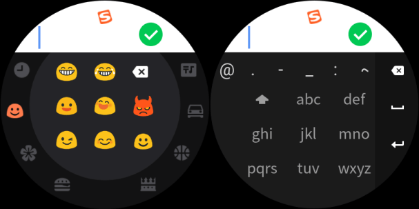

2020-10-29 15:44 砍柴网
近年来，智能穿戴已经深入到人们的日常生活中，尤其是智能手表市场发展势头强劲，市场表现尤为活跃。行研报告显示，2020 年上半年全球智能手表出货量已接近 4200 万，相比 2019 年同期实现了 20％ 的增长。
不过，用户在享受智能手表带来便捷的同时，在手表输入上却有很多不佳体验，屏幕小、输入慢、没有表情包等问题也亟待解决。近日，搜狗输入法针对此痛点，与人工智能公司出门问问达成合作，在出门问问旗舰新品智能手表TicWatch Pro 3中正式推出内置的搜狗输入法定制版。
目前的智能手表的屏幕多在0.8寸到1.5寸之间，受限于手表的操作尺寸，如何在有限的屏幕大小内最大提高用户的输入效率？如果强行将智能手机上的输入法软件直接植入智能手表，那就意味着我们对着一块非常小的屏幕，仔细“指指点点”，并需要精心检查，这绝对不是令人愉快的体验。
搜狗输入法的答案是为不同硬件推出定制版。通过与出门问问TicWatch 团队的深入交流，此次定制版输入法不仅专门针对TicWatch Pro 3圆形屏幕进行了输入界面的量身定制，还融入了语音、手写、emoji表情在内的多样输入方式，其中语音和手写输入模式的效率和性能更与手机版功能保持一致，提供了更高品质的服务支持。
无论从技术角度出发，还是从生态合作考量，搜狗输入法与出门问问合力提升用户体验，都是为智能手表用户带来啦惊喜。实际上，作为输入法领域的头号玩家，搜狗输入法依据自身强大技术积累，早早在多个领域的智能化输入布局。
十年磨一剑，我们看到如今的搜狗输入法服务着亿万用户，覆盖PC端、移动端，不仅与众多主流硬件厂商长期合作，更同时在智能手机、智能家居、智能教育终端、智能穿戴、智能车载、智能办公设备和智能医疗终端等各领域全面布局，提供着多方位的智能输入解决方案。可以说，搜狗输入法已经具备了优秀的智能硬件定制服务能力。可以预见，不远的未来会有更多AloT设备厂商牵手搜狗输入法，推动全面智能化输入时代的到来。